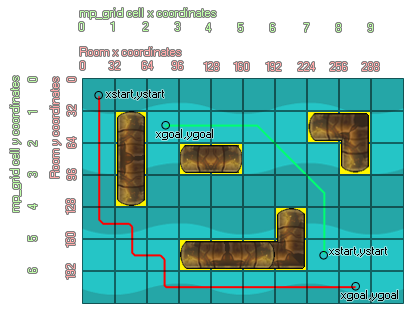

mp_grid_path(id, path, xstart, ystart, xgoal, ygoal, allowdiag);
| Argumento | Descripción |
|---|---|
| id | Índice del mp_grid que se va a utilizar |
| path | índice de la ruta que va a utilizar la función |
| x start | Iniciando la coordenada x de la nueva ruta |
| y start | Iniciando la coordenada y de la nueva ruta |
| xgoal | Acabado x coordenada de la nueva ruta |
| ygoal | Terminar y coordinar el nuevo camino |
| allowdiag | Indica si se permiten movimientos diagonales en lugar de horizontales o verticales |
Devuelve: booleano.
Con esta función, puede crear una ruta que navegará desde un punto de inicio hasta un punto final utilizando un mp_grid que haya definido previamente, evitando cualquier obstáculo que ya se haya agregado a la red. Los argumentos xstart y ystart indican el inicio de la ruta en las coordenadas de la sala, mientras que los argumentos xgoal, ygoal indican el destino. También puede seleccionar movimiento horizontal / vertical solamente o permitir movimientos diagonales completos especificando verdadero en el argumento allowdiag. La función devuelve verdadero (logró encontrar una ruta) o falso (error) y establece la ruta elegida. En la siguiente imagen, puedes ver cómo funciona todo esto:

Como puede ver, los objetos de "tubería" se han agregado a la cuadrícula, lo que significa que cualquier ruta creada debe rodearlos. Hay dos caminos creados en la imagen, uno (verde) se ha hecho con diagonales permitidas y el otro (rojo) sin. La diferencia entre los dos es bastante obvia, con el camino verde que se muestra mucho más "elegante" y directo, pero todo depende del uso que le pongas a cuál prefieras. Tenga en cuenta que la ruta es independiente de la instancia actual; es una ruta a través de la cuadrícula, no una ruta para una instancia específica, aunque una instancia específica puede tener la variable que almacena el índice de la ruta. También es posible que deba depurar estas rutas para ver cómo se crean e interactuar dentro del entorno del juego, en cuyo caso debe usar el draw_path función.
NOTA: La ruta debe haberse creado previamente (ya sea en código con path_add o como un recurso) y será reemplazado por la ruta generada por esta función.
global.grid = mp_grid_create(0, 0, room_width div
32, room_height div 32, 32, 32);
mp_grid_add_instances(global.grid, obj_wall, false);
with (obj_Enemy)
{
path = path_add();
if mp_grid_path(global.grid, path, x, y,
obj_Player.x, obj_Player.y, 1)
{
path_start(path, 0, 3, 0);
}
}
El código anterior crea una variable global "global.grid", luego genera un mp_grid y asigna su índice (id) a esa variable para usar en todas las demás llamadas a la función mp_grid. A continuación, agrega todas las instancias de "obj_Wall" en la cuadrícula antes de obtener todas las instancias de "obj_Enemy" para crear una ruta y luego usar mp_grid_path para calcular una ruta desde su posición hasta la posición de "obj_Player". Si existe una ruta, entonces el objeto se inicia a lo largo de la ruta.